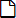

變更在啟動 cotodesign Template 與 cotodesign Order Viewer 時輸入的密碼 。
為了提高安全性，請定期變更密碼。
Template清單與Print Layout清單 |
登錄於 cotodesign 的「Template」與「Print Layout」的清單。
畫面右上的按鍵

變更在啟動 cotodesign Template 與 cotodesign Order Viewer 時輸入的密碼 。
為了提高安全性，請定期變更密碼。
顯示線上幫助。
語言
變更顯示語言。
Template清單

建立新的Template。
·關聯項目 >> 決定Template的列印方法和大小

修改Template。

匯入 SVG 檔，增加新的Template。
有關 SVG 檔的規格，請參閱『cotodesign 安裝指南』。

顯示Template的預覽。
無法變更設定。

刪除Template。

匯入Template檔案，然後上傳至伺服器。

儲存所選擇的Template。

輸入一部分的Template名稱，即可在Template清單中顯示符合該名稱的Template檔案。
名字
顯示登錄的Template的檔案名稱。
Template的檔案名稱有命名的規則，可顯示已句點區隔的階層結構。
列印種類
以印表機列印時選擇「彩色列印」，以雷射薄膜轉印機列印時選擇「燙金列印」，以金屬印表機列印時選擇「打印」，以切割機列印時選擇「切割」。
按一下「▼」，選擇「列印種類」，即可在Template清單中顯示符合該選項的Template檔案。
特殊效果
使用「專色」建立Template檔案時，可顯示符合特殊效果的圖示。
Print Layout清單
建立新的 Print Layout。

變更 Print Layout 的設定。

匯入 SVG 檔，增加新的 Print Layout。
有關 SVG 檔的規格，請參閱『cotodesign 安裝指南』。

顯示 Print Layout 的預覽。
無法變更設定。

刪除 Print Layout。

匯入Print Layout檔案，然後上傳至伺服器。

儲存所選擇的Print Layout。
連接設定
選擇連接Template的 Print Layout。
Template必須至少有一個連接的 Print Layout。沒有連接的Template將無法列印。
1個Template可選擇連接多個Print Layout，但如同彩色列印專用Template只能連接彩色列印專用的Print Layout，只有在Template和Print Layout皆屬於相同的列印種類時，才能進行組合。在 cotodesign Print Manager 中可設定要將訂購的Template連接至哪個 Print Layout。
預設值
cotodesign Print Manager 的[自動編排至Print Layout]設定為開時，請選擇自動連接的 Print Layout。
名字
顯示 Print Layout 的檔案名稱。
列印種類
以印表機列印時選擇「彩色列印」，以雷射薄膜轉印機列印時選擇「燙金列印」，以金屬印表機列印時選擇「打印」，以切割機列印時選擇「切割」。
按一下「▼」，選擇「列印種類」，即可在Print Layout清單中顯示符合該選項的檔案。
儲存
將Template與 Print Layout 的連接設定儲存於伺服器。
Copyright (C) 2018-2019 Roland DG Corporation